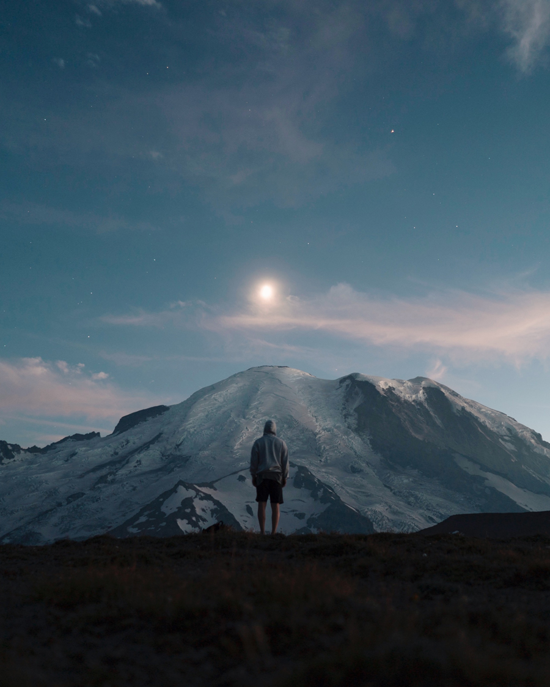
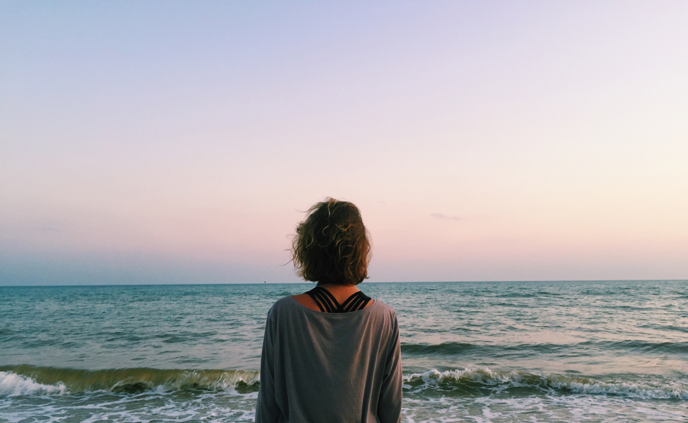

Поеду в лес
Лес — экологическая система, биоценоз, в которой главной жизненной формой являются деревья.
Лес — составная часть природы, понятие «лес» можно рассматривать на разных уровнях.
В глобальном масштабе — это часть биосферы, в локальном —
это может быть насаждение. Леса занимают около трети площади суши.
Поеду в горы
Горные системы занимают 64% поверхности Азии, 36% — Северной Америки, 25% — Европы, 22% — Южной
Америки, 17% — Австралии и 3% — Африки. В целом 24% земной поверхности приходится
на горы. 10% всех людей живёт на территории гор. В горах берёт своё начало большинство рек
Земли.


Поеду на Чёрное море
Я уплыву туда, где ни разу я не был, туда, где никто раньше не был. Никто
и никогда раньше не был, я уплыву. Я позову тебя смотреть на синее небо и пить
по капле синее небо, и падать в это синее небо, я позову.
Уеду я на Чёрное-Чёрное море, на Чёрное-Чёрное море, на Чёрное-Чёрное море уеду я.
Уеду я на Чёрное-Чёрное море, на Чёрное-Чёрное море, на Чёрное-Чёрное море.
Уеду я.